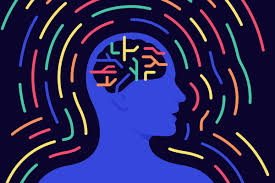

When I was around 7 years old, my mom introduced me to soccer. She thought it was important that I have a sport in my life. She was right because when I quit soccer periodically 4 years later, I got so out of shape that walking up the stairs was hard. So I started playing again. In 7th grade I joined a club, called sharks, where I met two of my closest friends today. I won't name them for their privacy, but the fact that If I never played soccer, I wouldn't have connections with those people, and therefore not have connections with most of my other friends. This year in 10th grade, I got injured during the school season, so I couldn’t play for 3 months. In those three months I ate junk and didn't take care of my well being, and that feeling, of being out of breath, and having no energy, and finding it hard to walk up the stairs came back. I think that's when I realized how important soccer was for me. I started watching videos, about soccer, to learn (I watch Football Protocol by the way. Hes great.), and rid of my rust. But watching videos wouden't do anything If i didn't act upon it. So i did.
I can't count the amount of things I've done in my life. By that I mean, I've played chess, gotten 1500 elo, have a drumset, have a piano, have a guitar, played soccer, done fencing, done ice skating, surfing, baseball, basketball… I could go on and on, and these things weren't a one and done, I've genuinely been interested in them for at least 2 months. I've started a business but quit in the first month because I lost interest. I kind of hate that about me. I wish I could do something and commit to that thing. I told my mom that I was going to play ukulele when I was younger, and quit in a week because It hurt my fingers. It feels like I can't commit to anything, and I don't know if that is because of my brain chemistry, or something that happens to everyone. I wonder if I will find a field, or activity, or job that I really enjoy, and commit my time to. That would be great.
Im back a day later. I ve been thinking about this and want to do something with quantim computing. Ive always been intrested but watched A video on how quantum computers work by veratisium and was hooked

I really like thinking. About things, and stuff that could happen, and possibilities and paradoxes, fake scenarios. I like to ponder over a hard math problem, or something like that. I don’t know if this is something everyone does, because if they do, I think I sound embarrassing writing this, kind of like I want attention and making myself feel special. Anyway, I really enjoy thinking about questions, mostly about human nature. I constantly ask my friends and family questions and riddles, but not like whats 1 plus 1, but questions like how much money would you take to press a button that kills one random person on earth? I know it sounds depressing but I enjoy listening to people's answers, as well as sharing mine. One day, I was at my friend's house. It was me and 4 other people, and I brought up a question, kind of like the example I told you, and we spiraled into a conversation about the world, and humans, and their actions, and outer space. My point is I really enjoyed that, and I can't exactly put a word to it but it's those kinds of questions and topics I really enjoy thinking about and talking about with my peers.
A video that I watched covering this was interesting again by veratisium The game theory video really made me think, and I liked that